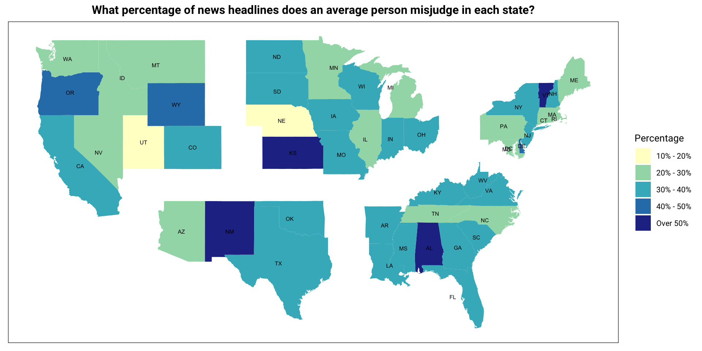
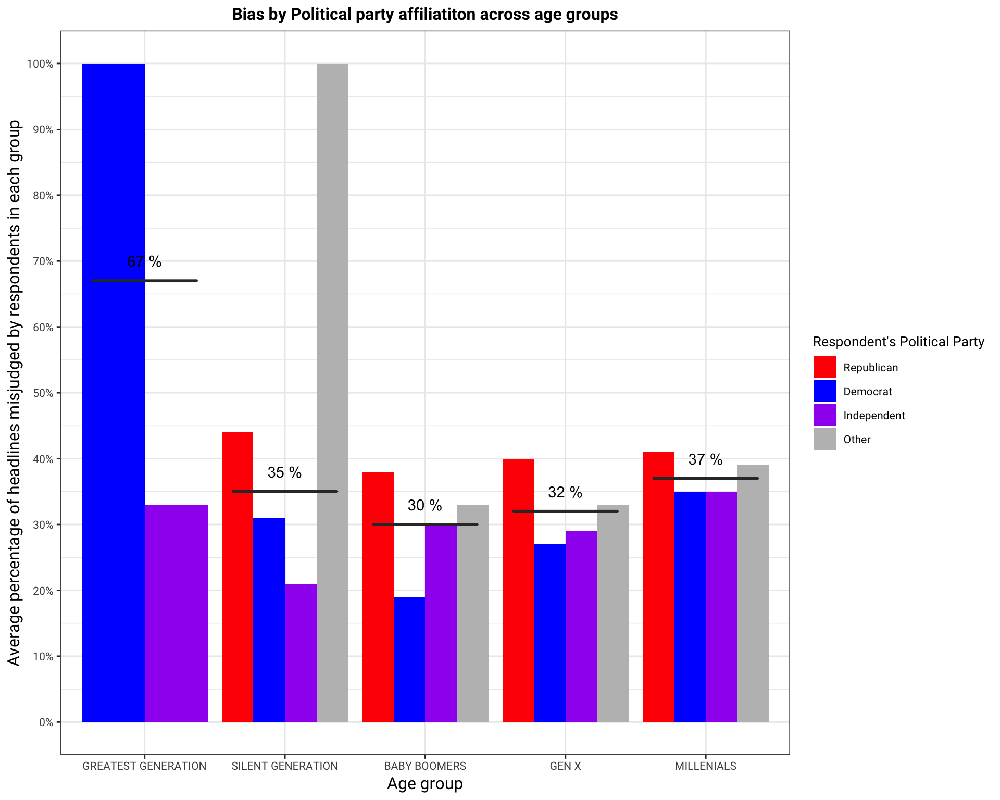
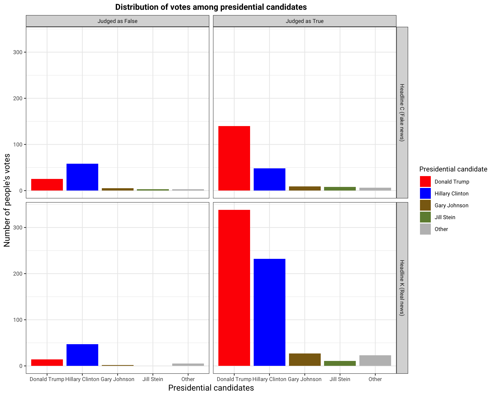

# Select the needed columns for merging
raw_data <- raw_data %>%
select(ID, HCAL_REGION1_Label_US, resp_gender, resp_age, DWD4, DWD5, DWD6, DWD1)
# Inner join the 2 datasets
joined_data <- headline_responses %>%
inner_join(raw_data, by = "ID")
# Data wrangling for the joined datset
joined_data <- joined_data %>%
# Select only instances where respondents recall a news headline
filter(recalled == "yes") %>%
# rename the variables
rename( US_states = HCAL_REGION1_Label_US,
party_affiliation = DWD4,
if_voted = DWD5,
political_party = DWD1) %>%
# create new variables to reflect age group, political party, president choice
mutate(age_group = case_when(resp_age %in% c(94:108) ~ "GREATEST GENERATION",
resp_age %in% c(73:93) ~ "SILENT GENERATION",
resp_age %in% c(72:54) ~ "BABY BOOMERS",
resp_age %in% c(39:53) ~ "GEN X",
TRUE ~ "MILLENIALS"),
age_group = fct_relevel(age_group,
"GREATEST GENERATION",
"SILENT GENERATION",
"BABY BOOMERS",
"GEN X",
"MILLENIALS"),
political_party = case_when(political_party == "1" ~ "Democrat",
political_party == "2" ~ "Republican",
political_party == "3" ~ "Independent",
political_party == "4" ~ "Other"),
political_party = fct_relevel(political_party,
"Republican",
"Democrat",
"Independent",
"Other"),
presidential_candidate = case_when(DWD6 == 1 ~ "Hillary Clinton",
DWD6 == 2 ~ "Donald Trump",
DWD6 == 3 ~ "Gary Johnson",
DWD6 == 4 ~ "Jill Stein",
DWD6 == 5 ~ "Other"),
presidential_candidate = fct_relevel(presidential_candidate,
"Donald Trump",
"Hillary Clinton",
"Gary Johnson",
"Jill Stein",
"Other"),
# Create variable wrong_or_not that determines if the respondent
# judge a headline correctly. 1 for wrong, 0 for correct
wrong_or_not = ifelse(accuracy_bool == is_fake, 1, 0),
# Create variable abbr for state abbreviation
abbr = state2abbr(US_states),
# Format US_states to lower case
US_states = tolower(US_states))
# Create new dataframe with percentage headlines judged wrongly per respondent
avg_wrong_responses <- joined_data %>%
# Calculate the percentage of wrong responses
group_by(ID, US_states, abbr, resp_gender,
age_group, presidential_candidate, political_party) %>%
summarize(wrong_count = sum(wrong_or_not),
total = n(),
percentage_wrong = wrong_count/total)
# Data wrangling of for Visualization 1: choropleth map
map_data <- avg_wrong_responses %>%
group_by(US_states, abbr) %>%
summarize(state_average = mean(percentage_wrong),
state_average_discrete = cut(state_average,
breaks = c(0.1, 0.2, 0.3, 0.4, 0.5, 1),
labels = c("10% - 20%", "20% - 30%",
"30% - 40%", "40% - 50%", "Over 50%"))) %>%
inner_join(us.map, by = c("US_states" = "region"))
# Data wrangling for Visualization 2: bias by age group & political party
# Group by age groups and political party
wrong_per_age <- avg_wrong_responses %>%
# Calculate the percentage of wrong responses
group_by(age_group, political_party) %>%
summarize(mean_wrong = mean(percentage_wrong),
mean_wrong = round(mean_wrong, digits = 2))
# Calculate the mean percentage wrong for each generation
perc_wrong_per_age <- avg_wrong_responses %>%
group_by(age_group) %>%
summarize(gen_wrong = mean(percentage_wrong)) %>%
mutate(gen_wrong = round(gen_wrong, digits = 2))
# Data wrangling for Visualization 3: Bias by presidential election candidate choice
# get presidential votes based on
# headlines most recalled and believed to be accurate
presidential_votes <- joined_data %>%
filter(headline %in% c("C","K")) %>%
group_by(headline, accuracy_bool) %>%
count(presidential_candidate) %>%
na.omit()The following choropleth map gives an overview of how much an average person from each state misjudge news headlines (i.e. They consider fake news true or real news false). States are split up by their respective regions (in clockwise order from the top left: West, Midwest, Northeast, Southeast, and Southwest). Interestingly, Utah and Nebraska are the states where people seem to have the best perception of news accuracy. In contrast, the five states with the highest percentage of misjudged news are Kansas, New Mexico, Vermont and Alabama, each belonging to a different region.
Clearly, no matter which region of the US we are looking at, people are prone to misjudge headlines they see.
# Plot choropleth map
ggplot(map_data,
aes(x = long.transp, y = lat.transp), colour = "white") +
geom_polygon(aes(group = group, fill = state_average_discrete)) +
geom_text(data = states, aes(long.transp, lat.transp, label = labels),
size=2) +
labs(title = 'What percentage of news headlines does an average person misjudge in each state?',
fill = 'Percentage') +
scale_fill_brewer(palette = "YlGnBu") +
theme_bw() +
theme(
text = element_text(size = 10, family = "Roboto"),
legend.text=element_text(size = 8, family = "Roboto"),
plot.title = element_text(hjust = 0.5, size = 12, face = "bold"),
panel.grid = element_blank(),
axis.title = element_blank(),
axis.ticks = element_blank(),
axis.text = element_blank())
As the findings from this scatterplot suggested, the more strongly republican a state is, the more susceptible they were to believing fake news and vice versa. We sought to find out if there was any correlation between the percentage of headlines respondents got wrong and their political party by splitting respondents into 5 age groups.1
A comparison of total bias across the age groups confirmed that Republicans and respondents affiliated with “Other” parties generally had the highest percentage of wrong responses across the age groups. The reason why Republicans had such high bias is probably because most of the headlines posed by the survey are pro-Donald Trump and anti-Hillary Clinton, regardless of whether the headlines are fake news or not. This was an accurate representation of news headlines posted during the 2016 Presidential Election.2 Because of this bias, Trump supporters were likely to believe most of the news and Democrats were more likely to be dubious. However, non Democrat and non-Republican respondents were more likely to be swayed in the pro-Trump, anti-Hillary direction.
# Create a plot that shows bias by Political party affiliation across age groups
ggplot() +
geom_col(data = wrong_per_age, position="dodge",
aes(x = age_group, y = mean_wrong, fill = political_party)) +
geom_boxplot(data = perc_wrong_per_age,
aes(x = age_group, y = gen_wrong)) +
geom_text(data = perc_wrong_per_age,
aes(label = paste(gen_wrong*100, '%'),
x = age_group, y = gen_wrong + 0.03)) +
labs(x = "Age group", y = "Average percentage of headlines misjudged by respondents in each group",
title = "Bias by Political party affiliatiton across age groups",
fill = "Respondent's Political Party") +
scale_fill_manual(values = c("Red","Blue","Purple","Gray")) +
scale_y_continuous(labels = percent, breaks=seq(0, 1, .1)) +
# change the title and axes size
theme_bw() +
theme(text = element_text(size = 10, family = "Roboto"),
plot.title = element_text(hjust = 0.5, size = 12, face = "bold"),
legend.text=element_text(size = 8, family = "Roboto"),
axis.title.x = element_text(size = 12),
axis.title.y = element_text(size = 12))
The values indicated on the plot also show the average percentage of headlines wrongly perceived for each age group. We can see that bias was high for the older and younger age groups, then low for the middle-lying age groups. However, the data for the Greatest Generation must be taken with a grain of salt, given that only 2 respondents recalled any headlines.
Some studies suggest that this could be due to social media usage across the different age groups. According to Statista, Millenials are the largest social media users with 88% using some form of social media platform everyday.3 Only 37% of individuals above 65 use social media. This could mean that most of them are not well informed about current political affairs and are more susceptible to believing what they hear. However, Millenials use more social media and chances of them accessing fake news are highly likely.
We further look into how belief in fake or real news might have influenced whom respondents voted for in the 2016 presidential elections.
From the count results, we see that for fake headlines, headline C - FBI Agent Suspected in Hillary Email Leaks Found Dead in Apparent Murder Suicide - was the most recalled and believed to be accurate. For real headlines, headline K - Donald Trump on Refusing Presidential Salary: “I’m not taking it” - was the most recalled and believed to be accurate.
# Display the counts per headline
# that most people recalled and
# believed the headline to be accurate
# For both fake news and real news
joined_data %>%
select(ID, headline, presidential_candidate, is_fake, accuracy_bool) %>%
distinct() %>%
group_by(headline, is_fake) %>%
na.omit() %>%
count(headline)| headline | is_fake | n |
|---|---|---|
| A | True | 246 |
| B | True | 199 |
| C | True | 305 |
| D | True | 277 |
| E | True | 127 |
| F | False | 264 |
| G | False | 286 |
| H | False | 408 |
| I | False | 324 |
| J | False | 115 |
| K | False | 699 |
# plot of presidential candidates based on headlines C and K
ggplot(presidential_votes, aes(x = presidential_candidate, y = n, fill = presidential_candidate)) +
geom_col() +
facet_grid(headline ~ accuracy_bool,
labeller = labeller
(headline = c("C" = "Headline C (Fake news)", "K" = "Headline K (Real news)"),
accuracy_bool = c("True" = "Judged as True", "False" = "Judged as False"))) +
scale_fill_manual(values = c("Red", "Blue", "goldenrod4", "darkolivegreen4", "gray")) +
labs(title = "Distribution of votes among presidential candidates",
x = "Presidential candidates",
y = "Number of people's votes",
fill = "Presidential candidate") +
theme_bw() +
theme(text = element_text(size = 10, family = "Roboto"),
plot.title = element_text(hjust = 0.5, size = 12, face = "bold"),
axis.title.x = element_text(size = 12),
axis.title.y = element_text(size = 12))
The bar plot above contains information on presidential candidates that had the most votes faceted by headlines C and K, and whether the headline was believed to be accurate or not by the respondents. For headline C, fake headline, Hillary Clinton got the most votes among respondents who believed the headline to be false while Donald Trump got the most votes among those who believed the headline to be true. For headline K, real headline, Hillary Clinton got the most votes among the respondents who believed the headline to be false while Donald Trump got the most votes among people who believed the headline to be true.
We see that Donald Trump got the most votes among respondents who believed the fake headline to be true and also among those who believed the real headline to be true because both headlines are in his favor. Thus, there is a correlation between what story people believe in and who they voted for.
However, our sample size only reflects a few respondents and not the entire US population, meaning that the observation may not be entirely accurate. Yet, fake news may have contributed directly or indirectly to raising doubts among American voters, either changing some people’s views of having Hillary Clinton as president or changing their decision to not wanting to vote for any candidate.